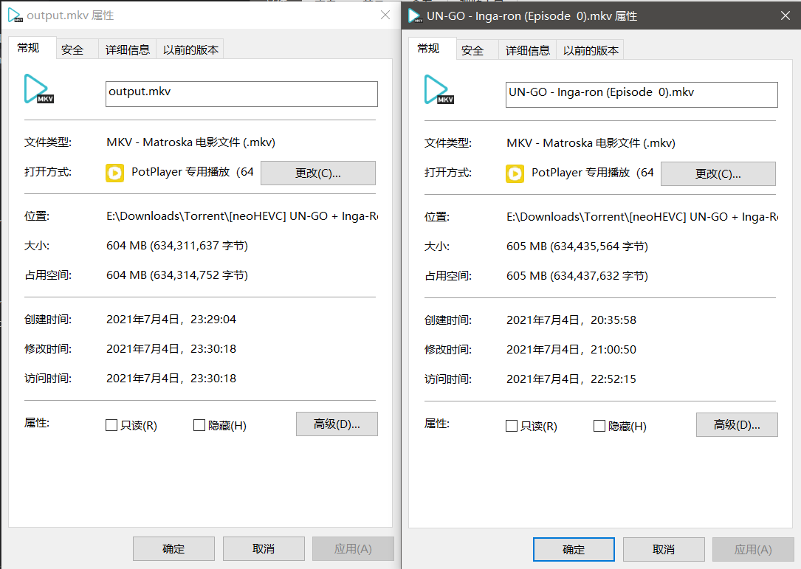
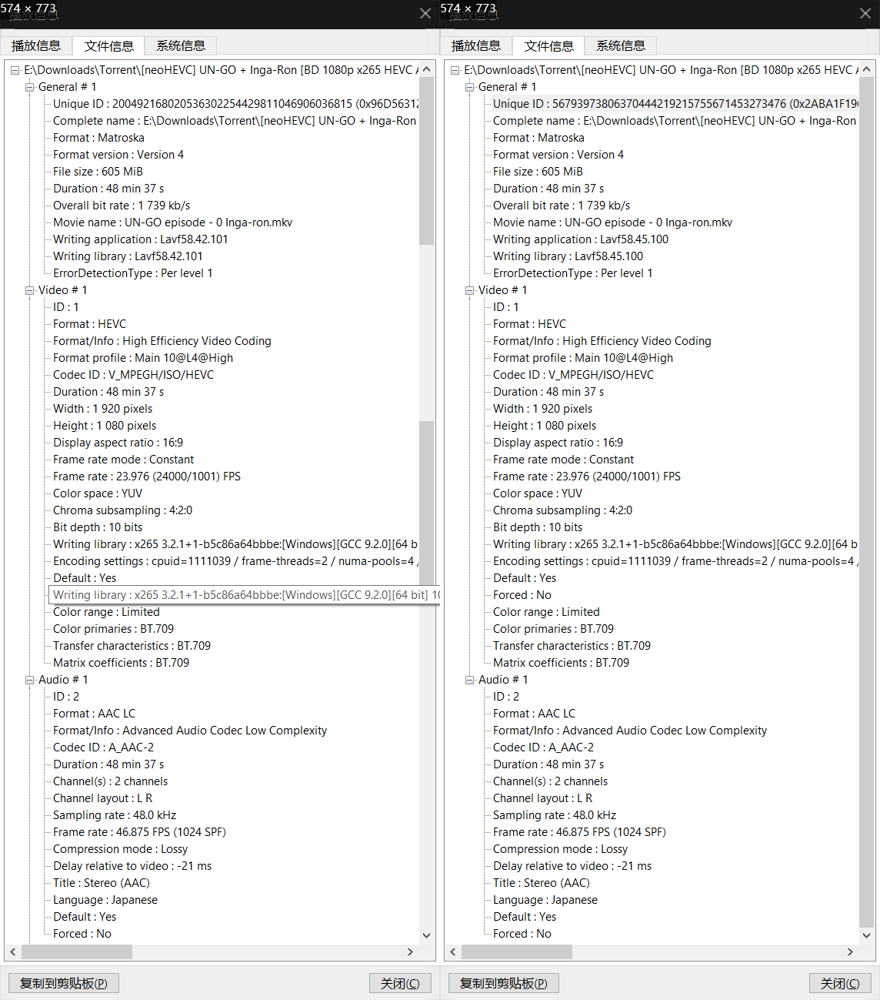

情景，我现在有一个有字幕的视频，但是我想对这个视频进行如下的操作：
1:字幕是外语，想把视频和字幕分开
这个比较简单，使用下面的命令可以提取视频（包含音频）:
ffmpeg -i video.mkv -vcodec copy -acodec copy -sn output.mkv
一般封装而不是压制的话，会用到 mkv 格式比较多，所以输入输出视频都是 mkv 格式。
解释一下参数的意义（自己理解+搜索到的）:
-vcodec表示视频解码，copy表示复制，也就是直接复制视频流-acodec表示音频解码，copy表示复制，也就是直接复制音频流sn，即Subtitle，n是不需要的意思，也就是不需要字幕
前面两条选项是为了保证输出视频中，视频和音频的质量；而第三个选项为什么需要呢？难道前面两条，不是已经限制了只复制视频流和音频流吗？具体我也不清楚，但是在我自己使用的时候，不加 sn 会导致字幕也一起复制到输出的视频中。
最后来看看效果:


可以看到几乎没有差别，但是导出的视频帧率也许没有原视频稳定。
来，举一反三，看看之后的其他问题
2:我只想要视频，其他的音频什么的都不要，作为视频剪辑的素材
通过上面的第一个问题，想必这个问题也很简单。
输入以下指令可以解决:
ffmpeg -i video.mkv -vcodec copy -an output.mp4
其中， -an 表示不需要音频，那么这样就能够单独输出视频流。这里输出时格式换成了 mp4 ，因为源视频编码为 H.265 中的一种 (HVC1) ，所以导出文件选择 mp4 格式对质量影响应该不大。
3:我只需要音频，而视频中的音频轨可能不只一个
单个音轨的提取很简单，输入下面的指令:
ffmpeg -i video.mkv -acodec copy -vn output.mp3
其中， -vn 表示不需要视频流。但是输出音频会遇到很多问题，比如我遇到的：在 PotPlayer 中看到的解码格式为 AAC ，但是在导出为 AAC 格式的音频时，导出的文件有误。一是播放时长度未知，二是在和视频合并时，时间不正确（从原来的 00:48:37 ，变成了 28:02:57 ）。导出为 mp3 的话，这种问题也许就没了，但是会导致音频质量下降。所以如果只是单纯需要去掉字幕的话，第一个指令会很好，不会出现这种问题。
多音轨（ TODO ）